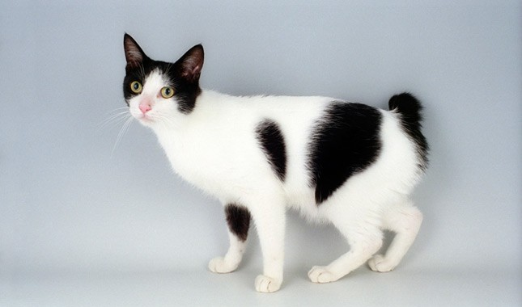

Main page
Fancy creatures
Brtish shorthair
Price: $75-$100
 The British Shorthair is the pedigreed version of the traditional British domestic cat, with a distinctively stocky body, dense coat, and broad face. The most familiar colour variant is the "British Blue", with a solid grey-blue coat, orange eyes, and a medium-sized tail.
The British Shorthair is the pedigreed version of the traditional British domestic cat, with a distinctively stocky body, dense coat, and broad face. The most familiar colour variant is the "British Blue", with a solid grey-blue coat, orange eyes, and a medium-sized tail.
Japanese Bobtail
Price: $600
 The Japanese Bobtail is a breed of domestic cat with an unusual bobtail more closely resembling the tail of a rabbit than that of other cats. The variety is native to Japan and Southeast Asia, though it is now found throughout the world.
Cornish Rex
Price: $800-$1,300
 A Cornish Rex is a breed of domestic cat. The Cornish Rex has no hair except for down. Most breeds of cat have three different types of hair in their coats: the outer fur or "guard hairs", a middle layer called the "awn hair"; and the down hair or undercoat, which is very fine and about 1 cm long.
A Cornish Rex is a breed of domestic cat. The Cornish Rex has no hair except for down. Most breeds of cat have three different types of hair in their coats: the outer fur or "guard hairs", a middle layer called the "awn hair"; and the down hair or undercoat, which is very fine and about 1 cm long.
Main page
<